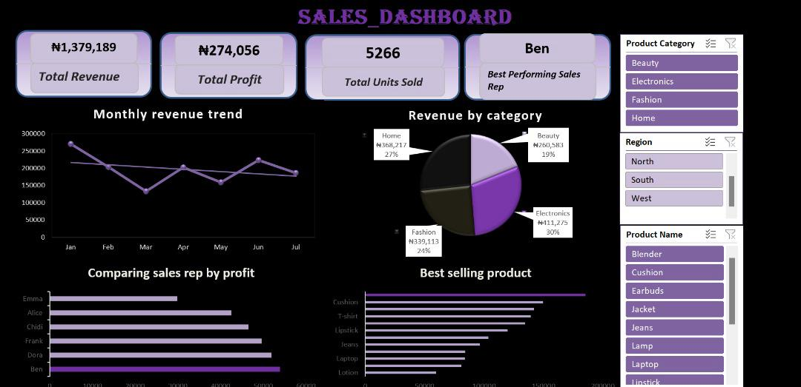
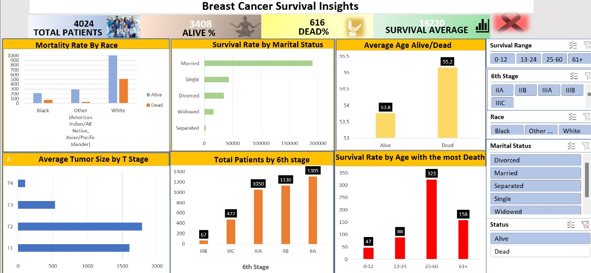

Projects




I am a Physical / Health Educator and a Data Analyst
I am a Human Kinetics graduate and a Data Analyst. Skilled in EXCEL, Power BI, Word and SQL. I'm passionate about transforming raw data into meaningful insights that solve problems and drive smarter decision.
Bachelor of Education in Human Kinetics
| S/N | Skills | Work Experience |
|---|---|---|
| 1 | Excel & Power Query - data cleaning,transformation, pivot tables, advanced formulas. | Designed and developed interactive dashboard on Power BI to track sales KPIs, and customer behavior |
| 2 | SQL -quering, joins, aggregations, and database management | Thornton |
| 3 | Power BI – interactive dashboards, reports, and data visualization. | Built SQL queries to extract and analyze data across multiple datasets |
| 4 | Data Modeling – building relationships between datasets for reporting. | Doe |
| 5 | Statistical Analysis – descriptive stats, correlation, hypothesis testing. | Doe |
| 3 | Power BI – interactive dashboards, reports, and data visualization. | Created a Sales Dashboard, KPI Summary, and Data Cleaning Project to demonstrate practical business insights |
| 6 | Data Cleaning & Preparation – handling missing values, duplicates, and inconsistencies. | Applied statistical methods (correlation, trend analysis) to identify key patterns |
| 7 | KPI & Metrics Development – defining and tracking performance indicators.interactive dashboards, reports, and data visualization. | Business & Data Analysis Jan 2024 - August 2025 |
| 8 | Critical Thinking & Attention to Detail | Supported business teams by preparing Excel reports on financial and operational performance |
| 9 | Time Management & Adaptability. | Automated routine data processes, reducing reporting time by 20% |
| 10 | Strong Curiosity & Continuous Learning | Assisted in building a KPI dashboard for management review |
National Institute of information technology
You studied something else in school but finally decided to have a tech skills, and also feeling alone? lets connect and share ideas, Experience and love together.
Contacts Me